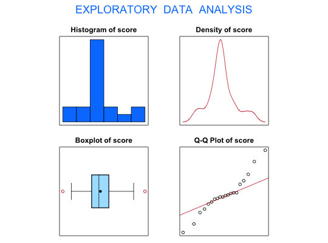

Data for Exercise 6.56
A data frame with 20 observations on the following variable.
Kitchens, L. J. (2003) Basic Statistics and Data Analysis. Duxbury
str(Tenness)#> 'data.frame': 20 obs. of 1 variable: #> $ score: num 29.8 29.4 27.5 29.8 31 29.2 29.5 29 27 35.8 ... #>#> [1] "score" #>#> Size (n) Missing Minimum 1st Qu Mean Median TrMean 3rd Qu #> 20.000 0.000 24.200 28.275 29.510 29.300 29.456 30.700 #> Max. Stdev. Var. SE Mean I.Q.R. Range Kurtosis Skewness #> 35.800 2.669 7.121 0.597 2.425 11.600 0.234 0.370 #> SW p-val #> 0.371 #>t.test(score,mu=30,alternative="less")#> #> One Sample t-test #> #> data: score #> t = -0.82119, df = 19, p-value = 0.2109 #> alternative hypothesis: true mean is less than 30 #> 95 percent confidence interval: #> -Inf 30.54177 #> sample estimates: #> mean of x #> 29.51 #> #>#> #> One-sample Sign-Test #> #> data: score #> s = 5, p-value = 0.02069 #> alternative hypothesis: true median is less than 30 #> 95 percent confidence interval: #> -Inf 29.8 #> sample estimates: #> median of x #> 29.3 #> #>#> Conf.Level L.E.pt U.E.pt #> Lower Achieved CI 0.9423 -Inf 29.8 #> Interpolated CI 0.9500 -Inf 29.8 #> Upper Achieved CI 0.9793 -Inf 29.8 #>detach(Tenness)